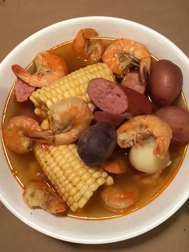

Frogmore Stew

Description
This Frogmore stew can be adjusted to serve any number. I've used this recipe for over 20 years since I moved to South Carolina.
Allow 2 tablespoons of seasoning per quart of water. If you cannot find hot smoked sausage, use another smoked sausage, such as kielbasa, and add crushed hot red pepper to the pot.
Ingredients
- 6 quarts water
- ¾ cup Old Bay Seasoning TM
- 2 pounds new red potatoes
- 2 pounds hot smoked sausage links, cut into 2 inch pieces
- 12 ears corn - husked, cleaned and quartered
- 4 pounds large fresh shrimp, unpeeled
Steps
- Bring water and Old Bay seasoning to a boil in a large stockpot over high heat.
- Add potatoes; cook for 15 minutes. Add sausage; cook for 5 more minutes. Add corn; cook for 5 more minutes. Stir in shrimp; cook until shrimp are pink, about 5 minutes. Drain immediately and serve.